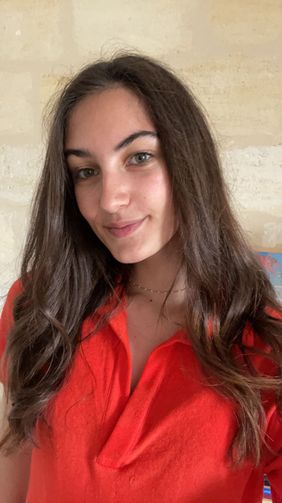

Elise Passicousset
UX/UI Designer junior
Je conçois des expériences digitales claires, sensibles et efficaces, avec une attention particulière portée aux usages, aux interfaces et aux identités visuelles.

Designer junior, curieuse et centrée utilisateur.
J'accompagne la création d'interfaces et d'univers visuels avec une approche à la fois structurée et sensible. Mon objectif : transformer une idée, un besoin ou une marque en expérience lisible, accessible et agréable à utiliser.
Découvrir mon approche